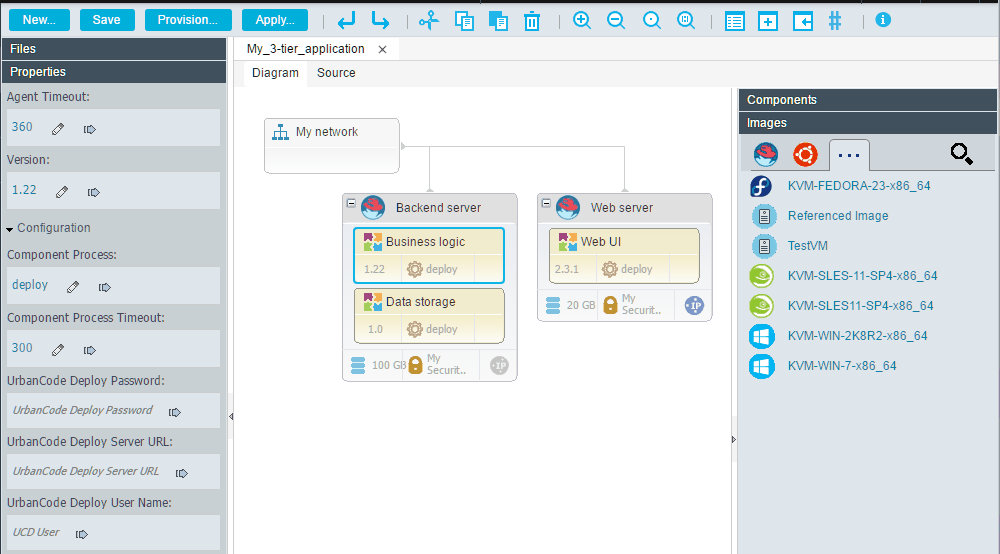

Editing blueprint diagrams
You can edit blueprints in a graphical editor.
- Connect the blueprint design server to a cloud system. See Connecting to clouds through the blueprint designer.
- Make sure that your user account is authenticated to a cloud system. See Setting up access to clouds in the blueprint designer.
- Connect the blueprint design server to the server. See Connecting the blueprint design server to the server.
- Log in to the blueprint designer.
- At the top of the page, select the cloud project and region to use.
To edit a blueprint in the graphical editor, open the blueprint by clicking Blueprints, and then from the Files list, select a blueprint. The Diagram tab shows the blueprint in a graphical editor.

To edit the source code of a blueprint, click the Source tab. For more information, see Editing blueprint source code.
The palette at the right side of the editor shows resources that you can add to the blueprint. The palette is filtered based on the cloud system and region that you are connected to, and the palette is divided into multiple drawers. If the Components, Images, Networks, or Templates drawers contain many items, the contents are separated across tabs, by type onto up to five tabs. The tabs are arranged in decreasing order of number of related items that they contain, from left to right. If only a few items of a type are available, all the items for multiple types are shown on the same tab, as shown in the Images drawer of the previous figure. If many items are available for many types, the four types with the most items are shown on separate tabs and all the rest are shown on the same tab. On tablet computers, the palette on the right side of the editor is collapsed by default. If you are using a tablet computer, to add elements to a blueprint, typically you click Add to open the Add Element window.
Note: The Heat resources that are displayed in the palette show the available resources on the current OpenStack cloud system. For more information about the core concepts referenced in the palette, see the OpenStack documentation.
- If you import a blueprint into another blueprint, the Imported drawer shows the components from the imported blueprint that must be placed in the active blueprint.
-
The Components drawer shows components and tags from the HCL® UrbanCode™ Deploy server. If you integrated with Chef, this drawer also shows Chef roles, and, if you integrated with a VMware vRealize Automation Enterprise cloud, this drawer also shows the vRealize Automation software components. You can drag these components to a virtual image. If you drag a component tag to a virtual image, all the components on the HCL UrbanCode Deploy server that contain that tag are added to the blueprint.
This drawer also includes a resource that is named Referenced Component. This resource represents a generic component. You can use the referenced component to represent a component that you specify later.
-
The Images drawer shows virtual images that are available on the current cloud system. You can drag these images to the blueprint.
This drawer also includes a resource that is named Referenced Image. This resource represents a generic virtual image. You can use the referenced image to represent a virtual image that you specify later. By using referenced images in this way, you can create one blueprint that you can provision on multiple clouds; see Editing configuration files.
Restriction: To be used with the blueprint designer, the virtual images must meet the requirements in Configuring images for use with the blueprint designer.
-
If you are connected to a VMware vRealize Automation cloud, the VRA Catalog drawer lists assets from vRealize Automation blueprints that are available for use. To reuse these existing catalog items, you can drag one onto an empty blueprint.
- The Networks drawer shows networks that are available on the cloud. If the connected cloud system supports routers, the Networks drawer also shows routers that are available. The New Internal Network resource represents a new network. The Referenced Network resource represents a network for which you provide information later. The Referenced Router resource represents a router for which you provide information later. See Modeling environments for VMware vRealize Automation.
- The Security drawer shows security configurations that you can apply to virtual images. The New Security Group resource represents a new security configuration. The Referenced Security Group resource represents a security configuration for which you provide information later.
- The Storage drawer shows cloud storage volumes. To add a storage volume, drag a volume to a virtual image and specify the mount point for the volume. The New Storage Volume resource represents a new storage volume. The Referenced Storage Volume resource represents a storage volume for which you provide information later.
- The Policies drawer includes resources such as load balancers and autoscaling groups.
-
The Templates drawer includes all the Heat resources that are available on your cloud, including resources that are not supported by the blueprint diagram editor. To add any resource, drag it onto the blueprint. You can add resources only by using this method in the graphical editor.
When you add a resource to a blueprint, you must update its properties in the source editor. Each property is formatted to accept the correct inputs, and all required properties in the resource are labeled. The names of resources that you add from the Templates drawer are appended with
-dspin the source editor. If you add the-dspsuffix to the names of existing resources, they are displayed in the graphical editor.
Resource names can contain only alphanumeric characters and the following special characters: hyphen (-), underscore (_), and dollar sign ($).
Note: If a resource name that you import from a cloud contains other special characters, the blueprint designer replaces the characters with underscore characters (_). If enough special characters are replaced, then the entire resource name is replaced. The replacement name contains resource- and a numeric string, such as resource-343421. Unlike the resource name, the name parameter can contain any character and is displayed in the diagram.
To search the palette contents, click Add , and then in the Add Element window enter your search term in the filter field.
You can drag resources to different places in the diagram. To connect an image to a network, drag a connection from the image to the network or vice versa. When you are finished editing, click Save.
Note: On tablet computers, connection icons are not displayed on elements. Instead, to connect elements, touch and hold the first element until the outline of the element flashes green. Then, without lifting your finger, drag your finger to the second element.
When you click a resource to select it, its properties are displayed in the Properties drawer, to the left of the editor. From this drawer, you can change property values or externalize them to properties as described in Externalizing properties in blueprints.
If the blueprint contains an error, warning, or unfinished TODO item, you cannot provision from it. If at least one of these items is present in a blueprint, an icon that represents the most serious type of item is displayed to the right of Toggle Comment. For example, if the blueprint contains at least one error, the error icon is displayed. Hover over the icon to display a list of all items that you must correct or complete before you provision the blueprint.
For information about the common types of resources that appear in blueprints, see Overview of blueprints.
Note: When you add components to the blueprint, the editor automatically adds the resource_tree resource to the blueprint. This resource represents the additions to the resources on the HCL UrbanCode Deploy server. If your blueprint contains no components, remove this resource before you use the blueprint to provision the environment.
resource_tree:
type: IBM::UrbanCode::ResourceTree
properties:
urbancode_deploy_url: { get_param: ucd_server_url }
username: { get_param: ucd_user }
password: { get_param: ucd_password }
team_mappings:
application: MyApplication
base_resource_group: MyResources
If you edit the base_resource_group property, a forward slash character (/) indicates a hierarchical relationship. If you specify base_resource_group: Cloud/Environment/OtherResources, then three resources are created. The OtherResources resource is the child of the Environment resource, and the Environment resource is the child of the Cloud resource.
Parent topic: Editing blueprints with the blueprint designer